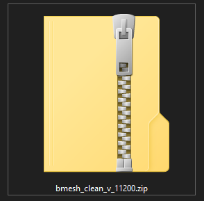
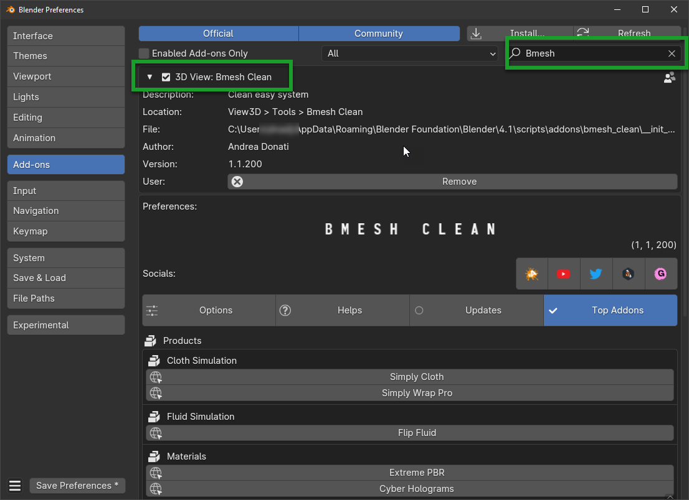

Installation
Tip
To check which version of Bmesh you are using:
- edit > preferences > addons and looking for the addon in the list by typing Bmesh Clean in the search bar
Download the files
Note
For Mac users: it often happens that Safari Browser is set to decompress .zip files, make sure this does not happen, otherwise the .zip file will no longer be a .zip file and you will not be able to install the addon as follows.
Just go to the Safari menu bar at the top left and click on Safari>Preferences, then remove the check mark from “Open safe files after download” in the “General” window. Done, if in the future you download zipped files with safari, they will no longer be unzipped.
In your product page, you can find various files, the main ones for the installation are the following:
bmesh_clean_v1_1_200.zipis the addon for blender, this is the addon that you need to install in Blender (The version number may change)
{kind=link}
Download the zip file from Gumroad or Blender Market (Depending on where you bought it)
Uninstall the old version
Note
Obviously this step is only for those who already have a version of Bmesh Clean installed, if you have not installed any version of Bmesh Clean, move on to the next step.
Go to Edit
Go to Preferences
Go to Add-ons
Search for Bmesh Clean
Click on the checkbox to uncheck it
Click on Remove
Save the preferences
Restart Blender
{kind=link}
Important
It may be necessary to restart as said in point 8 to be sure that the new modules do not conflict with those of the previous version.
Install the new version
Go to Edit
Go to Preferences
Go to Add-ons
Click on Install
Select the zip file you downloaded (
bmesh_clean_v1_1_200.zipname may change with number of version)Click on Install Add-on
Save the preferences (If the save preferences is not automatic)
{kind=link}
Once the previous step is finished, make sure the addon is in the list, search for it and activate the checkbox:
{kind=link}
If everything is correct, you can now view the addon in the Blender sidebar, in the “N” section (N-Panel) as shown here in the image:
Tip
If you don’t see this bar, press the “N” key on the keyboard to display it.
{kind=link}